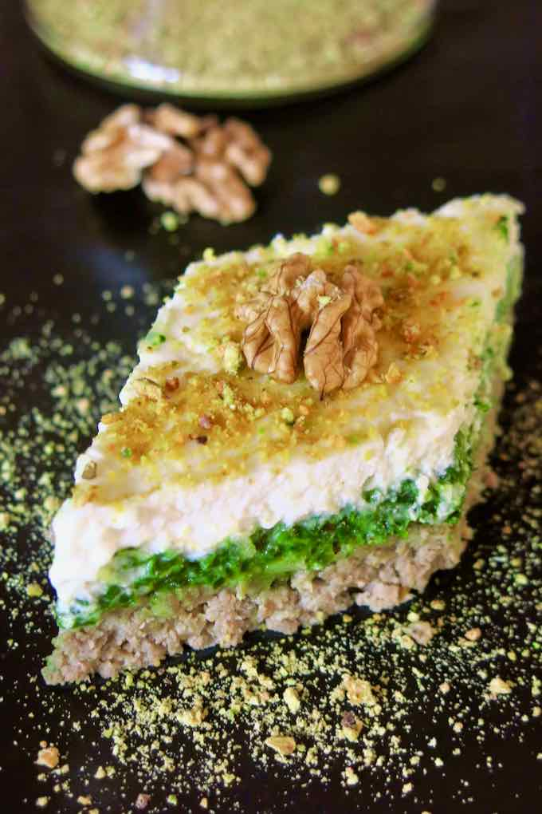

Tajine El Bey

Description
Tajine el Bey is a very elegant and refined variant of the Tunisian tajine, although it is very simple to
prepare. It has the distinction of being made of 3 separately assembled mixtures to form a layer of meat, a
layer of spinach and a layer made of ricotta.
It takes it's name from the Beys who ruled Tunisia originally on behalf of the Ottoman sultans and then
independently until
the dethronement of the last Bey following the proclamation of the republic in 1957. The Beys were famous for
being gourmets, very demanding in terms of gastronomy. In Tunisian cuisine, this title is used to indicate the
finesse and elegance in a recipe.
Ingrediants
For the meat layer
- 1 lb beef, ground
- 2 onions, ground
- 3 cloves garlic, pressed
- 2 oz cheese (e.g. mozzarella) grated
- 4 eggs, beaten
- ½ teaspoon ground cumin
- ½ teaspoon tabel (Tunisian spice blend consisting of coriander seeds, caraway seeds, garlic and dried chili
pepper)
- Salt & black pepper
For the spinach layer
- 10 oz. fresh spinach , rinsed, drained and finely chopped
- 2 tbsp of butter
- 2 egg yolks
- 2 whole eggs
- ½ teaspoon tabel
- 2 oz. cheese (e.g. mozzarella), grated
- Salt & pepper
For the rigotta layer
- 10 oz. ricotta
- 2 oz. cheese (e.g. mozzarella), grated
- 3 egg whites, lightly beaten
- Black pepper
For the mold
For the decor
- 3 oz walnuts (or pistachios, slightly roasted), crushed
Equipment
- Baking dish (13 x 9 inches)
Steps
For the meat layer
- In a large skillet, heat the olive oil over medium heat and brown the onions for a few minutes.
- Add the ground meat and garlic and stir well.
- Add the cumin and the tabel. Add salt, black pepper and mix well.
- Cook the meat over medium heat, uncovered, for 15 minutes, stirring regularly.
- Remove the meat from the heat and let it cool for 15 minutes.
- Add the grated cheese and eggs and mix well.
- Gently mix this preparation to obtain a smooth and even layer.
- Preheat the oven to 350F (180˚C).
- Butter a baking dish and pour all the ground meat mixture.
- Using a spatula, even out the surface.
- Bake for 10 minutes. The surface must harden a little.
For the spinach layer
- In a large skillet, heat the butter over medium heat. Sauté the spinach, stirring regularly until all the liquid is reduced.
- Let cool completely then add the egg yolks, the whole eggs, and the tabel.
- Season with salt, pepper and stir well.
- Pour the spinach stuffing in the oven dish, on top of the meat layer, then sprinkle with grated cheese.
- Bake for 10 minutes.
For the ricotta layer
- Mix the ricotta, grated cheese, and egg whites.
- Add the ricotta mixture to the spinach layer and bake again for 10 minutes.
- Let cool and cut small diamond-shaped slices.
- Sprinkle each with crushed nuts or pistachios or a mixture of both.